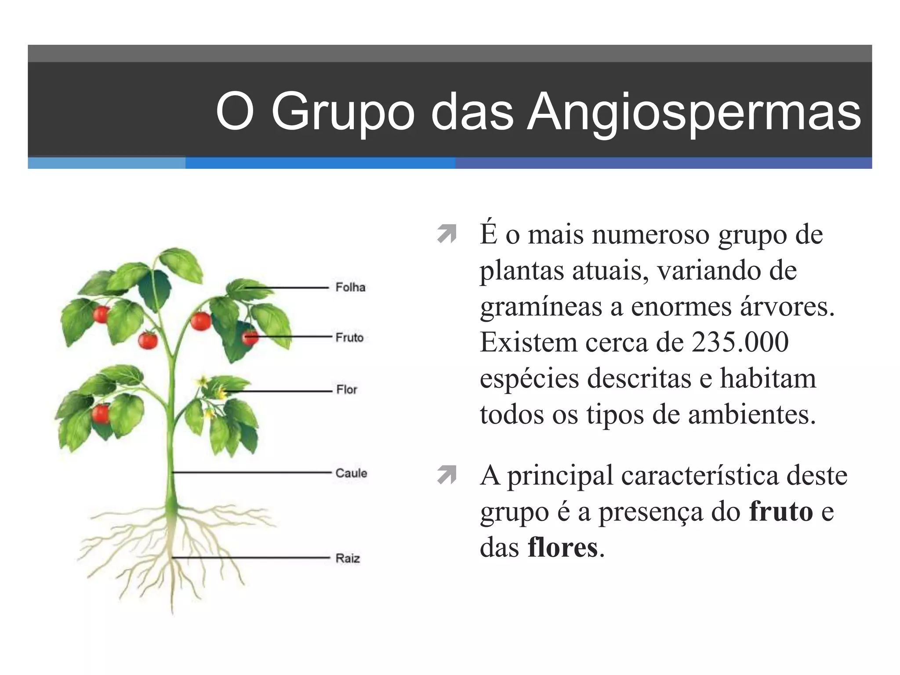

✅ Conceito
Plantas são seres vivos do Reino Plantae 🌎 que, na maioria dos casos, produzem o próprio alimento por fotossíntese ☀️🍬.
🧾 Características gerais
- 🧬 Pluricelulares: têm muitas células.
- 🔬 Eucariontes: as células têm núcleo.
- ☀️ Autótrofas (a maioria): fabricam o próprio alimento.
💡 Lembre: “Autótrofa” = faz alimento usando luz + água + CO₂.
🌳 Exemplos
árvores 🌳, capim 🌾, feijão 🌱, milho 🌽, ipê 🌼, samambaia 🍃, musgo 🌿, pinheiro 🌲

🔗 Por que isso importa?
As plantas são a base das cadeias alimentares 🧩🍽️: elas transformam energia do Sol em alimento (glicose), e os animais dependem disso.